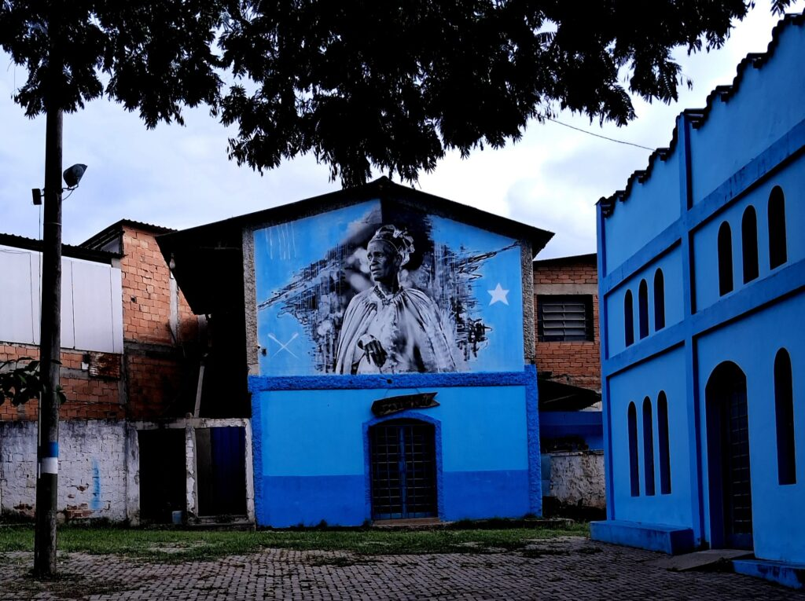

Irmandade Nossa Senhora do Rosário
Curtir
Descurtir

Salvar
Compartilhar
Com mais de um século de existência, a Irmandade de Nossa Senhora do Rosário dos Homens Pretos, localizada em Justinópolis, Ribeirão das Neves, é uma das maiores expressões da preservação da cultura afro-brasileira na região. Reconhecida como patrimônio cultural imaterial do município, a Irmandade não é apenas um espaço religioso, mas também um símbolo de resistência, memória e identidade coletiva. Em 2016, seu valor histórico e cultural foi oficialmente reconhecido pela Fundação Cultural Palmares, quando recebeu a certificação como comunidade quilombola, reforçando sua relevância para a história e a memória de Ribeirão das Neves e de Minas Gerais.
Sua origem remonta a 1889, quando foi fundada no povoado de Areias. Em 1919, a Irmandade se estabeleceu definitivamente em Justinópolis, em um terreno doado por Francisco Labanca, descendente de italianos que compreendia a importância da devoção e da união daquela comunidade. A construção da capela própria aconteceu em 1924, mas antes mesmo disso, em 1922, já havia sido realizada a primeira festa dedicada a Nossa Senhora do Rosário em sua nova sede, utilizando a Igreja de Nossa Senhora da Piedade como ponto de encontro. Desde então, as festas, procissões e rituais se tornaram momentos centrais da vida cultural e espiritual da irmandade, reunindo fiéis, devotos e guardiões da tradição.
Ao longo das décadas, a Irmandade se consolidou como guardiã de uma tradição que atravessa gerações, mantendo viva a religiosidade popular, os festejos, as danças, os cantos e os rituais que combinam fé católica e heranças africanas. Mais do que uma instituição religiosa, ela representa a luta pela preservação da memória negra e pela valorização da cultura quilombola. Ao continuar realizando suas celebrações e fortalecendo os laços comunitários, a Irmandade Nossa Senhora do Rosário de Justinópolis mostra como a fé, a resistência e a tradição podem se unir para escrever, a cada dia, novos capítulos de uma história marcada pela perseverança e pelo orgulho de suas raízes.